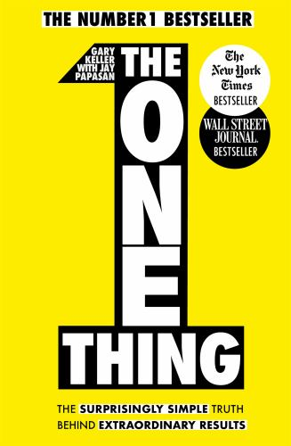

I am Manasa Akula. I am passionte about learning new technologies so, I choose computers as my major. I am currently pursuing my masters in applied computer science at Northwest missouri state university.
I like this book because, this book focuses on the idea that, in order to succeed in any area of life, one must choose and concentrate only on the most crucial activity or objective at any given time. One thing stands for prioritizing a single task and focusing on something specific.
